CoMem：用同文档多查询对比学习选择性压缩上下文
论文：Beyond Compressing Everything: Contrastive Memory Learning for Selective Context Compression。作者：Sikui Zhang、Haowei Liu、Ziyun Gan、Chunfeng Yuan等；第一作者机构为中国科学院自动化研究所，合作机构包括阿里巴巴和挚文集团。首次提交为2026年11月12日06:51 UTC，即北京时间11月12日14:51。论文入口：arXiv:2611.16384。官方代码仓库本轮可访问，未执行训练或复现实验。记录日期：2026年11月16日。
CoMem研究的问题是：文档与当前问题已经给定时，如何把长上下文变成少量连续记忆向量，让解码器仍能找到回答所需的证据。阅读重点在于查询条件、表示监督和槽位交互三个环节如何衔接，以及性能和效率声明各自使用了什么测试条件。
在有限记忆预算下，不同问题需要保留的证据可能集中在局部、分散在远处或遍布全文；只把查询拼到文档前面，并不能显式鼓励记忆槽位按查询需要分化，压缩器仍可能留下相似而缺少针对性的表示。
1. 背景和问题
长文档问答的困难不只是输入放不放得下。完整文本通常同时包含相关证据、重复叙述和干扰细节。把所有内容送入解码器，既增加预填充、后续注意力和KV缓存负担，也可能使真正需要的线索被淹没。论文从软上下文压缩切入：先用编码器读取原文，再将输出压缩为少量连续向量，最后让解码器基于这些向量回答。它与删去若干原文词句的硬压缩不同，压缩结果不是可以直接读懂的摘要，而是一组需要模型学会消费的隐状态。因此，压缩率衡量的是上下文接口缩短了多少，不能直接等同于语义信息完整度、设备总显存或整次请求成本降低了多少。
早期软压缩通常把文档映射到一个与具体问题无关的表示。这样做便于预计算和多次复用，但要求同一份有限表示兼顾许多未知问题。对于同一篇历史材料，问创办者是谁、创刊年份是什么、某次停刊由何事件触发，所需证据并不一样；即使都是回答同一实体，也可能需要完全不同的时间关系。若槽位预算很小，把全文所有潜在事实平均压进去，会让稀疏但关键的线索与大量背景竞争。CoMem并没有解决所有未来查询的长期知识存储问题，它首先选择了一个更明确的任务：压缩发生时已经知道当前查询，因而允许记忆随问题变化。这个前提是理解后续准确率结果的必要条件。
已有方法开始将查询与文档一起送入压缩器，但输入里出现查询与模型真正利用查询之间仍有距离。只使用最终答案的生成损失时，训练信号可以由解码器承担：编码器输出比较通用的记忆，解码器再结合问题完成剩余选择。只要答案概率提高，目标函数并不直接要求两个不同问题对应的记忆必须有明显差异。作者因此观察压缩后的表示相似度，希望判断压缩器是否在多个查询之间塌缩到近似状态。这里的“塌缩”是表示区分不足的诊断，并不是论文已经证明所有槽位完全相同，也不意味着相似度越低就一定越有利于事实保持。表示空间的变化仍需通过下游任务和消融解释。
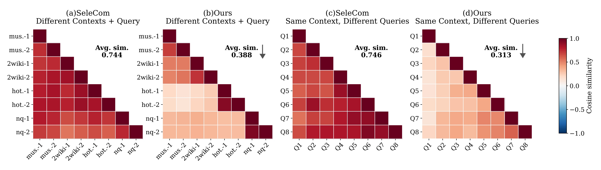
Figure 2的四个三角矩阵分别比较SeleCom与CoMem在不同文档加查询、同一文档不同查询两种设置下的压缩表示，颜色表示余弦相似度。左侧两图使用来自四个问答数据集的例子，右侧两图固定同一个上下文、改变八个问题；每个矩阵保留样本或查询标签，便于看清是否只是文档本身变了。图中SeleCom的平均相似度分别为0.744与0.746，而CoMem分别为0.388与0.313，说明本方法确实得到更有区分度的表示。右侧对照尤其接近作者的核心论点：仅通过不同文档区分记忆不难，在相同材料中根据问题重新分配容量才是希望训练出的行为。但这是一组表示诊断图，没有直接标出每个事实被保存或丢弃的位置，也没有证明两个查询必须具有互斥语义。较低相似度可能来自保留了不同证据，也可能部分来自问题表面形式。因此需要随后读取负例构造、真实问答增量和通用查询退化，而不能把热图颜色变浅本身当成所有压缩质量改善的证明。
为强化这种区分，论文把训练批次从“不同文档、不同问题”的混合改成“同一文档、多个问题”。不同文档的主题差别往往很大，编码器只需记住粗粒度文档特征，就能轻易把负例推开；固定文档后，这条捷径被削弱，模型必须更多关注每个问题对应的证据需求。这个设计利用的是训练数据的组织结构，而不是额外增加人工标注的证据位置。它也带来数据条件：一个上下文需要有足够多的不同问题，正文实验保留至少八个问题的材料。数据是否真的包含互补信息、问题之间是否高度重复，会影响困难负例的意义，不能只把批次大小八当成一个普通优化参数。
软记忆的另一层困难是槽位之间怎样交换信息。压缩槽位排在输入末尾，如果完全沿用语言模型的因果注意力，越靠前的槽位就无法看到后面的槽位，形成与任务无关的左右顺序。自然语言生成需要这个约束，预先计算一组连续记忆却未必需要。论文因此只在槽位内部开放双向注意力，原有查询与文档前缀仍保留因果结构。它希望各槽位共同安排证据，而不是在相互看不到的情况下重复压入相似内容。改变的是压缩器的信息流，不是让答案生成偷看未来词；回答仍由自回归解码器逐词输出。
从RAG系统角度看，这项工作位于“检索后、答案生成前”。它假设输入的文档已包含候选证据，没有提出新的检索器，也没有保证召回失败能够被软记忆补救。其价值是把压缩器从单纯的长度适配层变成与当前任务有关的证据选择模块。若迁移到推荐场景，较自然的是查询意图、用户当前问题与候选内容都已知的内容理解或解释生成，而不是直接把它当成长期兴趣记忆的替代。后者面对未知的未来请求，需要可增量更新、事实回查和状态维护，本文并未在这种在线生命周期上实验。明确接口，才能判断哪些结果值得借鉴，哪些还需要新的实验。
此外，原文分片压缩与整篇推理之间也有接口差异。每个片段可以基于同一个问题生成记忆，再让解码器组合这些状态，但一个片段中的压缩器未必能看到其他片段里的补充关系。若关键事实需要跨片段联合才能判断是否重要，局部选择可能提前丢掉证据。论文的多跳任务对这种能力提供了一定测试，尚未逐一分析跨片段依赖和片段边界位置。对工程实现而言，片段长度、检索文档数量和最终槽位总数应一起固定；单独保持每片压缩率一致，并不能保证不同文档数请求拥有相同解码上下文或相同保真度。
2. 方法
2.1 查询条件的记忆瓶颈
原文首先给出任务定义。输入由文档、查询与可学习记忆词组成，编码器输出最后一层中记忆位置的隐状态。文档按256个词元的片段处理，目标压缩率决定每片保留多少槽位。记忆词是训练出来的输入占位符，输出记忆则随文档和查询变化，两者不能混为固定用户画像。压缩完成后，原文不再直接进入回答解码器，后者接收问题与连续记忆。这样的设计把是否保留证据的责任集中到编码瓶颈，解码器只能利用压缩后还存在的信息及自身已有参数知识。
符号解释：文档序列为$C$，当前查询为$Q$，可学习记忆词数量为$K$，隐状态维数为$d$；$f_\phi$是参数为$\phi$的压缩器，$h^m_k$是第$k$个记忆位置的最终隐状态，$M$是供解码器消费的记忆矩阵。此式合并原文Eq.1和Eq.2。$K$远小于原文长度时，记忆构成容量受限的信息接口。相同文档与不同查询可以生成不同$M$，因此不应默认这份状态能无损复用到任意未来问题。
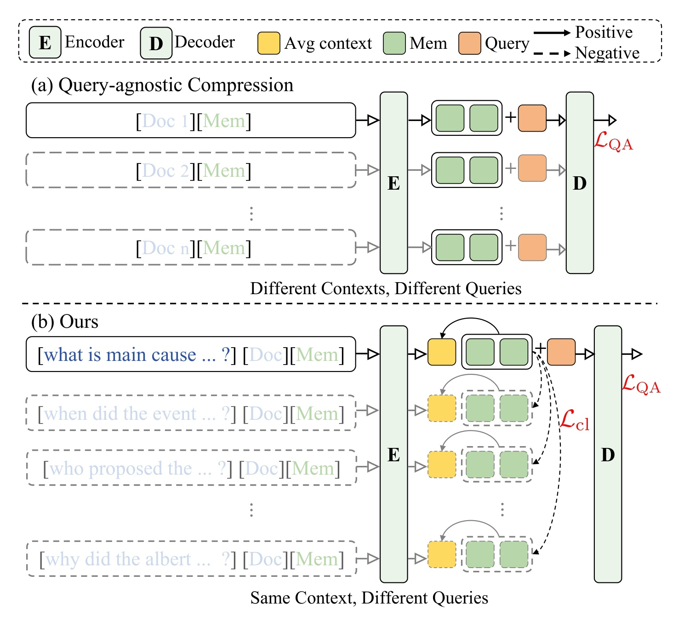
Figure 1上半部分画的是常见查询无关压缩：不同文档分别经过同一个编码器，记忆交给解码器，并主要用答案生成误差训练。下半部分固定同一文档、替换多个问题，绿色记忆既接收右侧的QA监督，也与黄色上下文表示形成对比关系。顶部图例区分编码器、解码器、平均上下文、记忆与查询，实线和虚线分别表示正负关系，不能将虚线看成推理时还要检索的外部文档。两部分真正变化的是表示级训练约束和批次组织，而非把相同文档复制八遍就自然得到八份互补事实。图中的平均上下文提供信息保持方向，其他问题的记忆提供区分方向，二者共同约束压缩器。对于一个已经能根据问题生成记忆的模型，这个监督仍可能有用，因为它将“记忆要随问题有区别”变成显式优化目标。与此同时，若不同问题需要同一条证据，将对应记忆一律推开可能不完全符合语义关系；图示给出训练结构，却没有消除这类负例定义风险。本文后面的消融能说明这个设计在给定数据上有效，不能证明它适合所有问答集合。还需注意，下半图的多个编码分支在训练时同时存在，用于构造批内对比；线上处理单个问题时不需要为了凑出八个负例再生成七个额外问题。训练期的同文档问题组与推理期的一次查询是两种计算形态，不能把批内对比误解释为每次回答都要调用八次编码器。
符号解释：$Y=(y_1,\ldots,y_T)$是目标答案，$y_{<t}$为第$t$步前已生成的词元，$p_\theta$是参数为$\theta$的回答解码器。近似号表达希望压缩后仍能保持回答能力，不是分布等价定理；乘积是原文Eq.3、Eq.4的自回归分解。推理时先执行编码压缩，再执行答案生成，不能只看后半段时延就推断整条请求加速。
2.2 对比压缩器与同文档困难负例
对第$i$条训练样本，模型对记忆槽位做平均池化，得到一个用于对比损失的向量；同时取该样本上下文位置的最终隐状态，池化得到正目标。这里池化只是训练监督的接口，解码器仍消费整个槽位矩阵，不能误写成所有信息最终只剩一个均值向量。上下文位于查询之后且沿用因果前缀，所以其隐状态也处于当前查询条件下；即便字面文档相同，不同样本的上下文表示未必完全相同。这一点帮助理解“保持文档语义”和“区分查询需求”如何同时成立。
符号解释：$M_i$为第$i$个查询条件下的全部记忆状态，$H_i^c$为对应上下文位置的状态序列；$m_i$和$c_i$均是$d$维向量，分别代表压缩结果和源上下文，此处对应Eq.6、Eq.7。模型将$c_i$作为停止梯度的正目标，避免对比损失通过改变目标分支轻易缩小误差。停止梯度并不意味着整个上下文编码器永久冻结，参数仍可由其他位置和QA目标更新。
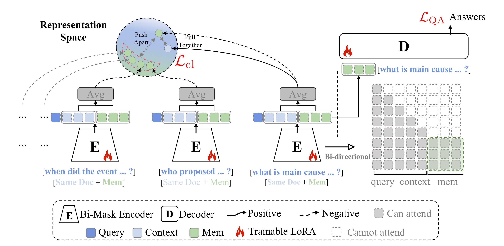
Figure 3左侧的多个编码器共享参数，每个分支输入同一文档与不同查询，蓝色表示查询，浅蓝表示上下文，绿色表示记忆。平均后的上下文与本分支记忆被拉近，不同分支的记忆被推开；图中的火焰标记指可训练LoRA，并非单独训练了多个互不相同的大模型。右侧解码器以记忆和问题生成答案，顶部答案损失让记忆仍对问答有用，防止对比空间变得可区分却丢失任务信息。右下注意力矩阵又给出另一个关键约束：前缀只看因果历史，记忆可以看全部前缀和所有记忆槽位；灰色空白块说明前缀不能反过来读取末尾记忆。这使信息压缩发生在槽位，而不会把尚未形成的记忆传播回原文以制造循环依赖。图中同时包含表示训练与注意力连接，理解时应把两个层次分开：正负边决定优化方向，mask决定一次前向计算中哪些位置有机会交换信号。实验显示二者联合使用很关键，但图并未证明每个槽位自动拥有可解释的唯一事实，也没有可直接读取的证据归属标注。源上下文正目标停止接收对比损失梯度，使模型不能单纯靠移动目标向量完成当前对齐，但共享编码权重仍会被记忆路径和答案路径更新。因而所谓停止梯度是局部分支处理，不能据此把整幅图中的编码器标为冻结。图中问答词的监督也发生在训练期，线上压缩不会拿到目标答案作为输入。
符号解释：$N$为微批次样本数，$s$为余弦相似度，$\tau$为温度，$\operatorname{sg}$表示停止梯度。每个锚点$m_i$只有本实例上下文$c_i$一个正目标，负例是其他压缩记忆$m_j$，并不是其他原始文档向量；此式对应Eq.8并显式标出正文说明的停止梯度。批次由同一文档的八个不同问题组成时，负例共享文档内容，模型更难只依靠文档主题区分它们。该目标优化的是相对相似关系，不能单独保证证据逐字重建，仍要依赖答案监督和数据结构约束。
符号解释：$\mathcal{L}_{\mathrm{QA}}$是目标答案的负对数似然，$\lambda$控制表示约束强度，实验第一阶段取0.1；此式合并Eq.9、Eq.10。QA项要求保留能用于回答的信息，对比项抑制不同查询记忆过于相似，两者并非彼此独立的性能保证。训练第二阶段会冻结压缩器，只训练解码器继续适配已有记忆，因此损失中的参数更新范围随训练阶段变化。
2.3 记忆槽位之间的双向信息流
原文最后修改压缩器注意力mask。它保持查询与文档序列的因果次序，同时允许每个记忆槽位读取全部前缀和其余槽位。这样槽位可以在前向传播中协同分配信息，而不必遵守“第一槽永远不能读最后一槽”的任意次序。实现使用FlexAttention支持定制mask；这不等于把整个原始文档改成双向编码，也不涉及让答案生成访问未来答案。正确实现必须保留两个零块和因果块的含义，不能只给所有位置套一个全一矩阵。
符号解释：$L$为查询和文档前缀长度，$K$为槽位数；左上角为二值下三角因果mask，右上为前缀不能关注末尾槽位的零矩阵，左下表示所有槽位能看完整前缀，右下表示槽位之间双向连接。此为Eq.11的分块表达，特定实现还需按真实特殊词位置扩展索引。双向块只说明信息通路存在，是否利用这些通路学习有效分工由训练决定，后文也显示单改mask没有稳定收益。
训练分为两个阶段：第一阶段从CLaRa语料筛选每文档至少八个问题的组，约16万实例，编码器与解码器均通过LoRA训练；第二阶段使用约45.3万条指令问答，初始化第一阶段权重，冻结编码器，只继续优化解码器。附录给出LoRA秩16、alpha32、dropout0.1、学习率$10^{-4}$、一轮训练、单卡微批次八及梯度累积16等配置。八个问题组成一个同文档对比组，与优化器总batch128不是同一层含义。第一阶段单H100约十小时、第二阶段四H100约五小时是作者报告的训练资源，不是本轮复现测量，也不能直接相加为单卡十五小时。
3. 实验结果
3.1 评估设置与主结果
作者使用Natural Questions、HotpotQA、MuSiQue和2WikiMultiHopQA四个问答任务，覆盖单跳与多跳证据；另用RULER-NIAH，在五篇文档中插入七位数字检查精确证据保留。主对照采用Mistral-7B解码器，比较硬压缩LLMLingua2、LongLLMLingua、Provence与软压缩ICAE、PISCO、RAM、SeleCom；Qwen3-4B另列为CoMem的第二骨干结果。指标ACC为Cover-EM式答案词覆盖，不是严格Exact Match。语义判分采用DeepSeek-V4-Flash二元Judge，不能把两者混成同一准确率，更不能将Judge当人类事实核验。
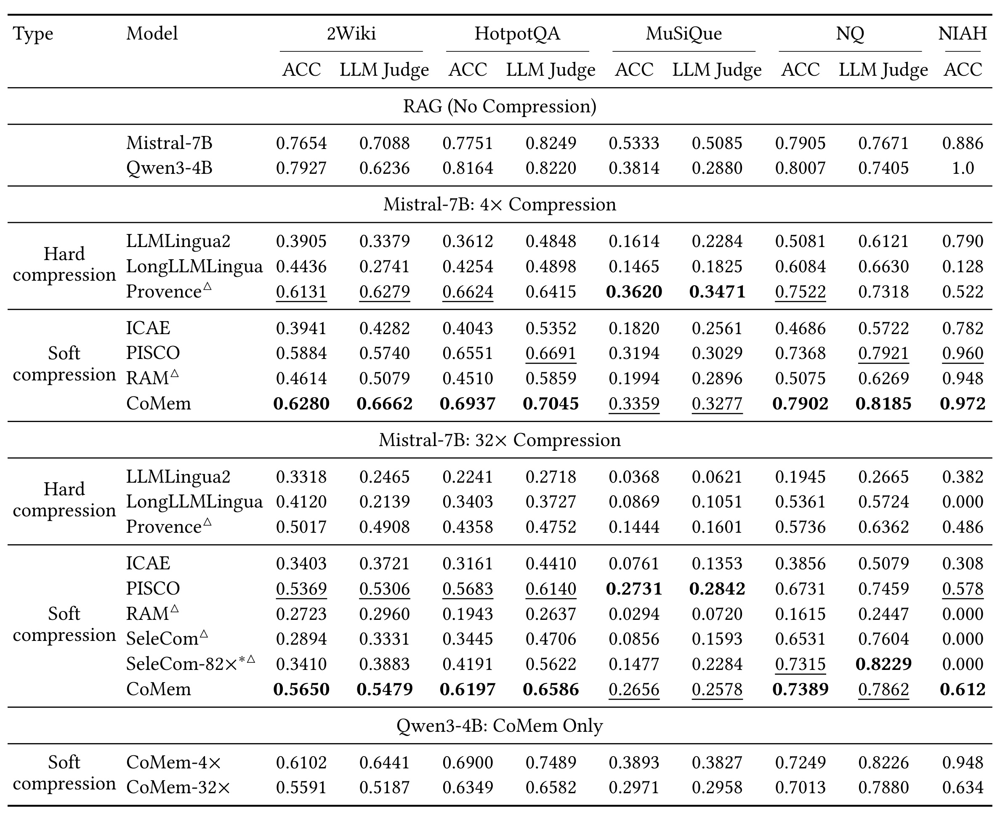
Table 1需要先按骨干和压缩率分组，再比较同一列。Mistral-7B在四倍压缩下，CoMem的2Wiki ACC为0.6280，相比Provence的0.6131和PISCO的0.5884更好；HotpotQA ACC为0.6937，高于Provence的0.6624；NQ ACC为0.7902，接近未压缩0.7905，Judge为0.8185，高于未压缩0.7671。然而MuSiQue上CoMem的ACC与Judge为0.3359和0.3277，均低于Provence的0.3620和0.3471，因此不能说所有任务和指标都获胜。三十二倍压缩下，CoMem的2Wiki、HotpotQA和NQ更强，但MuSiQue仍低于PISCO：ACC为0.2656对0.2731，Judge为0.2578对0.2842。NIAH从四倍的0.972降到三十二倍0.612，说明稀疏证据的精确保留依然受预算限制。最后两行Qwen结果不能与上面Mistral的方法比较直接归因于压缩算法，因为底座已经改变。作者关于压缩后可优于完整上下文的叙述也需限定：Mistral四倍压缩只在NQ的Judge超过完整上下文；Qwen有更多Judge增益，但多项ACC仍下降。该表支持在固定预算下更有效地压缩，并不支持普遍无损替代完整文本。还可以单独看精确针任务的反例：Mistral完整上下文为0.886，四倍压缩的CoMem达到0.972，但PISCO也有0.960；这可能反映压缩后干扰减少，不能直接归为独有对比机制。到三十二倍时CoMem仍高于PISCO的0.578，然而远未保持低压缩水平。对于NQ，三十二倍的Judge0.7862还低于表中SeleCom原论文最佳八十二倍配置的0.8229；这条配置压缩率不同，只能作为额外参考，不能混进严格同预算排名。表格里的加粗主要针对各Mistral压缩组，不代表与完整上下文或所有跨配置结果比较都最佳。若要量化“总体最佳”，还需要预先规定各任务及两种指标怎样加权，而本文主表没有一个可替代逐列阅读的统一业务效用分数。同预算与较强软压缩基线比较更能说明可迁移的增量，例如四倍Mistral下HotpotQA的Judge较PISCO增加3.54个百分点，NQ增加2.64个百分点。这比只对照损失严重的硬压缩配置更接近实际方案选择，也避免将不同基线难度产生的差距混为算法收益。
在未经压缩的Mistral对照中，2Wiki ACC为0.7654，HotpotQA为0.7751，MuSiQue为0.5333；这些都明显高于对应CoMem四倍压缩结果。较好的压缩基线排名与追平完整上下文是两个判断。Qwen的MuSiQue四倍ACC反而略高于未经压缩，0.3893对0.3814，但不能据单点认定压缩普遍提高推理；训练适配、输出风格和Judge偏好都可能改变结果。论文没有为主表报告多种随机种子的置信区间，因此小幅差距应保留统计不确定性。
3.2 压缩比与性能取舍
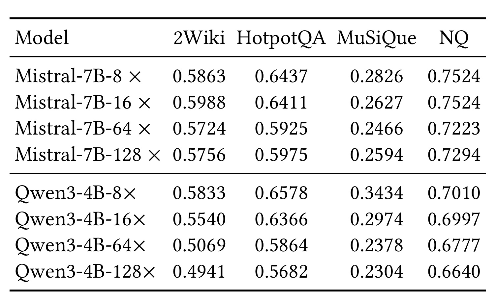
Table 2在同一方法下逐步缩小记忆容量，四列分别是2Wiki、HotpotQA、MuSiQue和NQ，表内分Mistral与Qwen两组。Qwen从八倍到一百二十八倍时，四项ACC分别由0.5833、0.6578、0.3434、0.7010降至0.4941、0.5682、0.2304、0.6640，平均绝对下降0.0822，即8.22个百分点，不能写成相对只下降8.22%。MuSiQue的0.1130绝对损失较大，意味着多跳证据可能更难挤入极少槽位；NQ下降0.0370较小，任务类型不能平均掩盖。Mistral并非每一列随压缩率严格单调，例如2Wiki一百二十八倍0.5756高于六十四倍0.5724，HotpotQA也有类似小回升；这不证明更高压缩更有益，可能受到训练和评估波动影响。所谓最高一百二十八倍压缩，是输入表示槽位数的比例，并没有给出整模型显存减少一百二十八倍的测量。使用该表做预算决策，应先选可接受的任务损失，再考虑槽位数量，而不是把最高倍数作为默认部署配置。若严格按每片二百五十六词元设置计算，三十二倍对应约八个槽位，一百二十八倍只有约两个；槽位预算大幅缩小，却不意味着模型参数数量同步缩小。表中非单调的小回升还提醒，只有单次结果时不应将不同压缩点的微小优势解释为新的容量规律。
更高压缩比减少解码器可见的原文表示，也更依赖压缩器提前找到真正重要的证据。实际系统若问题分布变化，单跳实体提取的可接受预算不一定适用于比较、否定或时间关系查询。论文覆盖四个任务提供了初步区分，但未报告每种证据结构的详细错误率，也没有证明在超长文档、跨片段关系或不同语言上同样平滑退化。将256词元的分片输入与未来任意长度材料混为一谈，会高估该实验的外推范围。
3.3 两阶段训练和记忆交互
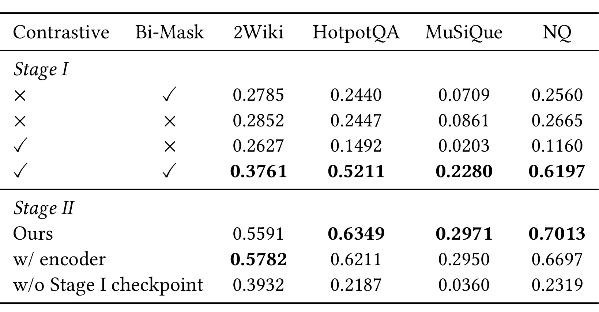
Table 3把第一阶段的对比学习与双向mask拆开，显示这两项必须放在一起理解。Qwen在三十二倍压缩下，无对比、因果mask的HotpotQA ACC为0.2447，仅打开双向mask为0.2440，几乎没有提高；有对比但仍用因果mask时更降至0.1492，同时启用两项才到0.5211。MuSiQue也由有对比无双向的0.0203升至两项齐备的0.2280，说明对比信号在受限信息流下可能明显伤害任务表现。不能把这一组结果概括成“对比学习总有效”或“双向注意力总有效”。第二阶段完整模型HotpotQA达到0.6349、NQ0.7013，较第一阶段显著提高；若不用第一阶段checkpoint而直接走第二阶段，则分别只有0.2187、0.2319。继续更新编码器并不全面更优：2Wiki为0.5782，高于冻结编码器的0.5591，但HotpotQA与NQ都下降。这个对照支持冻结是一个整体取舍，未证明继续更新在任何任务上都无价值。两阶段之间的训练量和数据改变也要保留，不能将全部增量都归到某个单一mask。例如第一阶段两项齐备时的2Wiki为0.3761，对照两项都关闭的0.2852是9.09个百分点增量，而MuSiQue则由0.0861到0.2280。另一方面，仅开启对比损失造成的下降说明新增监督也可能把优化带向错误方向。表中没有展示同文档问题证据重叠程度、负例温度扫描与最终错误类型之间的对应关系，因此尚不能确定究竟是信息通路、梯度竞争还是负例语义在每类失败中主导。
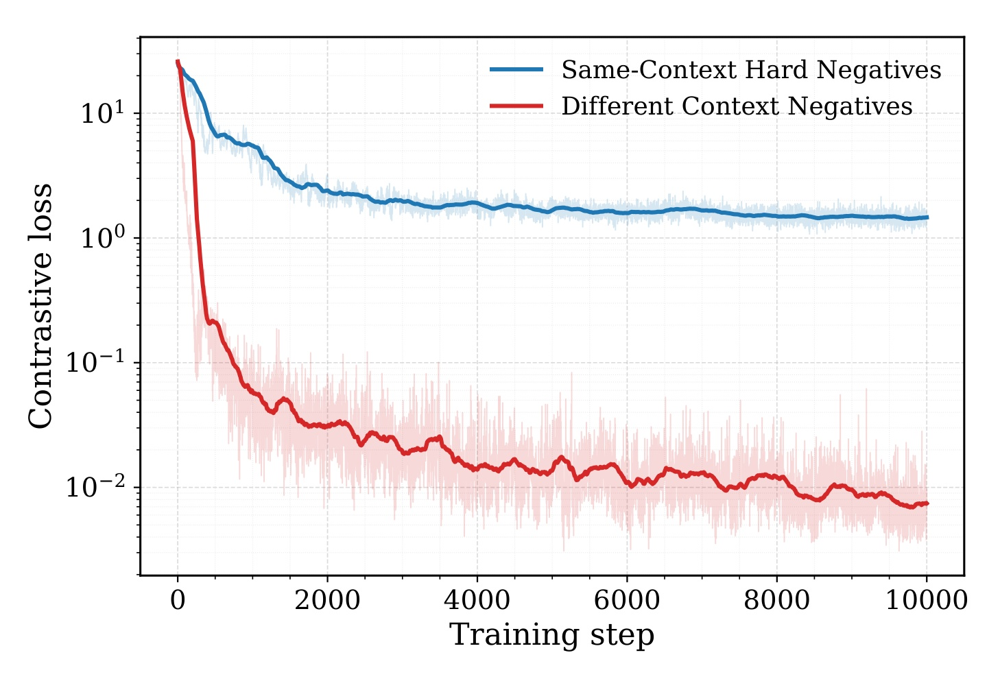
Figure 4的横轴是训练步，纵轴为对比损失且使用对数尺度，蓝线代表同文档不同查询的困难负例，红线代表不同文档负例。红线较快降至很低水平，而蓝线保持较高且缓慢下降，符合作者关于异文档负例容易被粗粒度主题区分的解释。图中阴影是训练曲线的波动展示，不能在没有说明时当作跨随机种子置信区间。较高训练损失本身也不是泛化更好的证据：模型可能遇到真正有用的困难负例，也可能被相似问题或共享答案造成的假负例拖累。因此必须结合下一张QA消融，确认更难的训练任务在最终指标上带来收益。图没有给出每对问题的证据重叠标签，无法排除部分查询实际上应共享记忆内容；它说明优化行为不同，尚未完成对负例语义合理性的逐例证明。另外，两种负例来源的损失数值并不是可直接比较的任务准确率。同文档组的候选彼此更相似，即使最终记忆已经有用，分类问题也可能仍较难；异文档组的低损失同样不自动意味着压缩器过拟合。可靠判断仍应看受控设置下的下游变化。
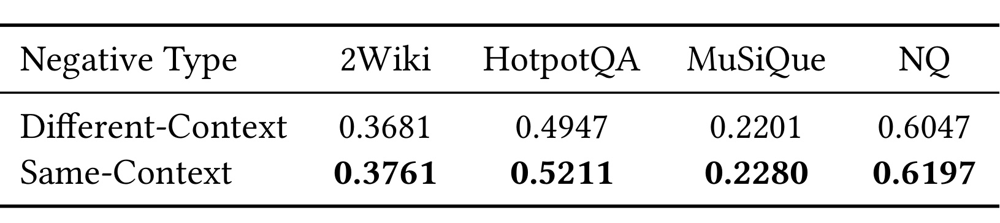
Table 4比较第一阶段同文档与异文档负例的四项ACC，其他设置沿用论文消融配置。HotpotQA从0.4947提高到0.5211，绝对增量0.0264；2Wiki从0.3681到0.3761，MuSiQue从0.2201到0.2280，NQ从0.6047到0.6197。四列方向一致，支持同文档多查询的批次组织提供了比单纯分开文档更有用的训练信号，但增量应按实际百分点表达，不能把第一阶段完整联合模型相对失败配置的巨大差距全部归给这一项。这个表也说明Figure 4中的难度增加并非只有损失更高，至少在给定问答任务上有实际收益。由于该表未展示多seed误差，0.0079等小差异仍需要稳定性检验；而且同文档组筛选本身改变了训练数据可用范围，对每篇材料不足八个问题的语料能否获得同样收益，论文没有给出直接答案。这些数值属于第一阶段的组件分析，不能直接与Table 1最终模型的主结果增益相加。第二阶段解码器适配之后，早期表示差异能保留多少仍应单独做相同负例设置的完整两阶段对照。四个任务的增量尺度不同，也不支持为所有数据集指定一个固定的提升百分比。
3.4 查询可知性、速度与证据保留
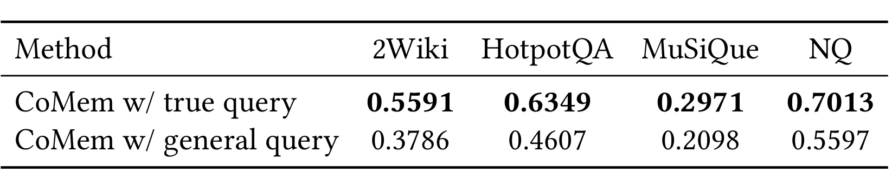
Table 5直接检查压缩时知道真正问题的重要性。三十二倍压缩下，真实查询对应的2Wiki、HotpotQA、MuSiQue、NQ ACC为0.5591、0.6349、0.2971、0.7013；换成通用的“保留可能有用信息”指令后，分别降至0.3786、0.4607、0.2098、0.5597。四项绝对损失为18.05、17.42、8.73、14.16个百分点，平均约14.59个百分点。通用查询表示能够预计算并供不同下游问题复用，这是工程上有吸引力的接口，但它的质量不能借用真实查询条件下的主表分数。作者指出通用版本仍优于若干查询无关基线，这一主张可与相应压缩组比较，却不能消除它与自身真实查询版本的明显差距。部署选择实际上有两种不同成本结构：每个问题重新压缩，可以较好保留针对性证据；离线通用压缩省去在线编码开销，却牺牲问答能力。此处没有证据证明一份通用软记忆可以在未知未来查询上保持原文的全部事实。而“超过若干查询无关基线”也不是超过所有强基线。例如通用查询的2Wiki0.3786仍低于同为三十二倍的PISCO0.5369，NQ0.5597也低于PISCO0.6731。这两项对照限制了把离线通用版本直接称为最优通用压缩器的说法。
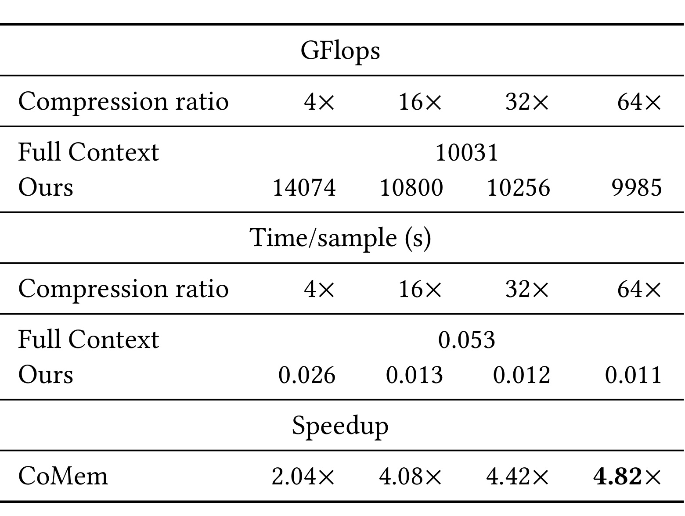
Table 6测量设置为单H100、128词元问题、五篇各256词元文档，并强制生成32词元。下半部的完整上下文时延为每样本0.053秒，四倍、十六倍、三十二倍、六十四倍压缩后分别为0.026、0.013、0.012、0.011秒，对应2.04至4.82倍的解码器侧加速。正文明确排除检索与上下文压缩开销，且承接上一节离线通用压缩设置，因此这些数字不是当前问题到来后在线重压缩再回答的端到端速度。上半部GFlops也没有随时延同幅下降：完整上下文为10031，四倍压缩反而为14074，十六倍10800、三十二倍10256，六十四倍9985才略低于完整对照。这说明槽位序列缩短、实际GPU运行效率和理论计算量并非同一指标，不能用4.82倍速度推断计算或能耗同样下降。表内三个子表同属一个原始效率对象，阅读时需要把时延范围与排除项一起保留。若生产请求每次都换问题，重新压缩的服务时延和吞吐可能改变总体收益；若预计算可充分复用，还应把离线成本按实际复用次数摊销。以表中六十四倍的两个已报告时延作一个条件计算，解码阶段每样本约节省四十二毫秒；如果一次在线压缩新增的耗时超过这部分节省，其他开销相同时整次请求便不能获得同向时延收益。这个比较只是由表格读数推得的预算界线，没有测得压缩器真实耗时，更没有替代排队与并发测试。离线存储场景还需要付出记忆编码、存取、版本管理和失效重算成本，复用次数较少时摊销可能很有限。作者测量强调隔离下游生成，适合作为解码器接口的性能证据；若要用来决定服务扩容或GPU预算，需要额外端到端测量。
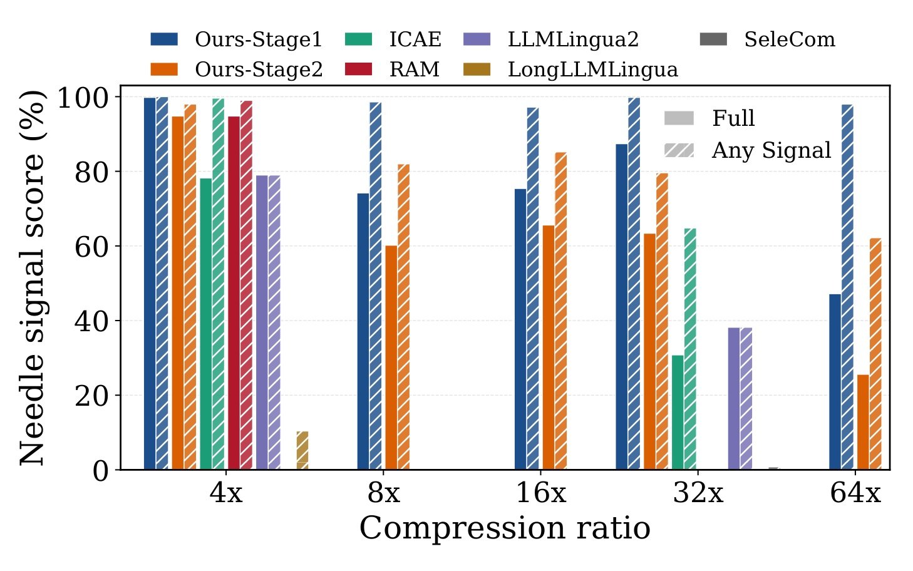
Figure 5在Qwen3-4B上比较RULER-NIAH的两种标准。实色柱的Full要求完整七位数字全部恢复，斜纹柱的Any Signal只要有完整针或可辨认数字子串即计入，后者明显更宽松。随着压缩率升高，CoMem第一阶段仍保存不少局部信息，正文给出六十四倍Any Signal为0.98；但该数值不等于完整针准确率98%，图中完整恢复柱明显更低。第二阶段在常规QA上改善，却没有保证每个压缩比下针信号保留同步提高，六十四倍完整恢复也继续受损。这提示“找到了正确证据区域”和“逐字保存了精确答案”是两个能力：部分数字损坏仍可能在Any Signal中得分，但在验证码、编号或金额等任务里已经是错误。不同基线在高压缩下接近零，也只能说明该合成针任务上的相对差距，不能据此断言它们在一般文档理解中完全没有信息。该图最有价值的诊断是将局部信号残留与精确输出分开，而非用宽松指标代替真正任务成功率。第一阶段到第二阶段的变化还提示，面向自然问答的指令适配与机械数字复制可能存在取舍，不能因为常规问答提高就省掉精确证据回归测试。
3.5 语义判分也需要校验
附录把ACC形式化为归一化后参考答案词集合是否被预测覆盖：
符号解释：$y$是参考答案，$\hat y$是预测，$S$为归一化后的词集合，$\mathbb{I}$是条件为真时取一的指示函数，对应原文Eq.14。这样的指标能允许答案外附加解释，却也可能把“提到了正确名称但最终拒答”计为正确。Judge使用问题、参考答案与预测进行语义判断，可以减少词覆盖的某些误判，但仍以给定参考答案为中心，不能代替外部事实核验。
附录Table 9的案例还揭示更深的边界：其中把一本小说名称对应的“扮演标题角色的演员”答案当成参照，另有兄弟关系和播出平台时间的表述争议。本文不把这些案例里的实体关系与日期当成已核实事实，也不直接接受作者对每个拒答的“过度限定”标签。若问题本身或参考答案有问题，压缩后更直接给出符合参考的回答，可能提高Judge，却未必更真实。可靠复现应保留原始文档和完整输出，分别审计问句是否成立、参考答案是否可靠以及模型有没有无依据补全；仅用同一个Judge重算一次分数无法完成这些检查。
4. 总结
4.1 对机制和证据的判断
CoMem最清晰的贡献是把查询条件压缩分解为三个可以独立检查的环节：记忆表示是否与源材料保持联系，不同问题是否促成差异化状态，槽位之间是否有足够的信息流协作。其同文档困难负例设计，比单纯把问题拼在输入里提供了更直接的监督；mask与对比损失的交互消融也显示，训练目标必须和可实现的信息通路匹配。这些机制有可复用价值，但论文的主要经验结论应表述为“在若干固定压缩预算和问答任务上改善相对表现”。整体证据不足以支持压缩普遍无损、全部指标领先，或端到端成本必然下降。
4.2 工程复现应先固定接口
若尝试实现，首先应确定压缩发生在问题到来之前还是之后，并分别保存真实查询模式与通用查询模式的质量、时延。其次应以同一骨干、同一回答模板和相同训练数据量复核对比损失与mask四种组合，防止把底座或指令微调收益误归因于压缩器。再次需要保存压缩前后完整回答，而不是只存分数，以便定位事实丢失、推理失败和判分误差。对含精确数字、多跳关系或否定条件的问题，应保留可回查原文的路径；软向量不可读，不应被当作可以直接审计的自然语言证据。最后再测包括编码、检索、传输和生成的端到端成本，离线压缩则按实际复用次数摊销，而非只引用解码器的4.82倍。
4.3 局限与后续跟进
第一，查询预知是假设边界：Table 5已显示离线通用压缩损失较大，因此不能直接迁移为未知未来问题的长期用户记忆。第二，表示区分不等于事实保持：同文档不同问题可能共享答案或证据，负例质量和假负例比例尚缺细粒度分析。第三，精确证据仍会损坏：Any Signal的高值遮不住完整针恢复下降，对精确标识任务需另设门槛。第四，效率范围有限：仅decoder时延排除压缩和检索，且GFlops不一定更低，没有本轮独立端到端测量。第五，评估也有误差来源：Cover-EM、模型Judge和可疑参考答案各自有局限，主表未提供全面的多seed置信区间。第六，软记忆不是隐私机制：压缩向量可能仍保留敏感内容，不能把不可读性当成额外保密保证。
后续可以沿三条具体路线推进。其一，按单局部证据、多个分散片段、跨片段关系和精确数字对测试集分层，检查压缩率上升时到底先损坏什么，避免只看四任务均值。其二，固定同文档组内的问题数和证据重叠程度，比较困难负例与假负例处理策略，验证收益是否来自查询选择而不是语言表面差异。其三，构建多查询复用的成本实验，计算通用压缩、每查询重压缩与原文直读的实际分界，并加入压缩失败后回读原文的策略。若这些条件没有测清楚，优先将CoMem看作一个有依据的查询条件压缩方案，而不将其包装成通用长期记忆或无损推理加速器。
代码仓库可访问只能证明有公开入口，本轮没有检查所有模型权重、数据许可、版本依赖与运行脚本是否足以复现。继续跟进应先从较小的公开问答子集重现同预算主表，再检查具体错误；若精确答案丢失而Judge上升，应该优先解释分歧，而不是只选择更好看的指标汇报。对于实际应用，可把软压缩与按需回读原文组合，但回读机制的触发准确率、额外成本和最终质量属于新的方案，需要重新测量，不能算作本论文已经交付的能力。